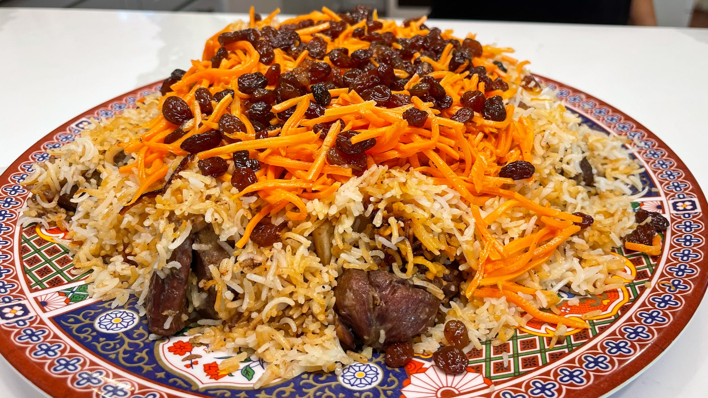

Kabuli Pulao

Description
Kabuli palaw is een Afghaanse pilav. De hoofdingrediënten zijn gestoomde rijst, gekaramelliseerde wortelen, rozijnen en gemarineerd vlees. Allerlei variaties zijn gekend in de omliggende Centraal- en West-Aziatische landen, waarbij bijvoorbeeld amandelen, pistachenoten, saffraan kunnen worden toegevoegd.
Ingredients
- 400 g rijst
- 1 eetlepel zout
- 3 wortelen
- 2 eetlepels suiker
- 100 g rozijnen
- 1 theelepel kardemom
- 1 kg kalfsvlees middelgrote stukken gesneden (liefs met een beetje bot eraan)
- 1 eetlepel garam masala
- 1 theelepel kurkuma
Steps
- Bel Arian
- Vraag of zijn moeder dit wil koken
- Geef cadeautje